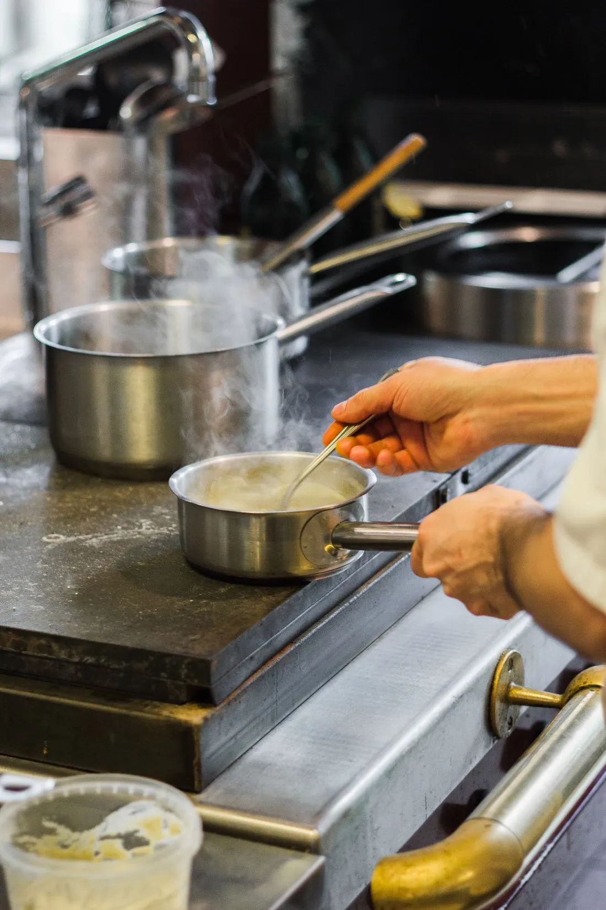

How a small bakery learned to say no
When a supermarket offered a contract worth ten times its income, the bakers turned it down.
In a Lisbon kitchen, nothing is waste: not the scales, the peels or the water from the beans.

The kitchen at Casa Brava is small enough to touch both walls. On a busy night, twelve people work in it, and almost nothing leaves it in a bin.
Fish bones become stock, then sauce. Peels become powders and salts. Even the cooking water from the beans is saved, whipped and used to make a dessert that tastes like caramel and costs nothing.
Waste is only a failure of imagination, said the chef, wiping his hands.
The chef says the rules came from necessity. When the restaurant opened, there was no money for waste. The menu grew from what was left, and it turned out to be the best thing they ever did.
Today diners wait weeks for a table. Other restaurants send staff to learn. “We are not special,” the chef shrugs. “We just look more closely.”
When a supermarket offered a contract worth ten times its income, the bakers turned it down.
Along England’s south coast, volunteers are replanting meadows that locked away carbon for centuries.